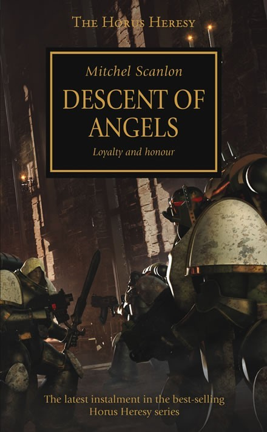

DESCENT OF ANGELS

Author: Mitchel Scanlon
Format: Novel
On the forest world of Caliban, knightly orders defend a low-technology people from the beasts of the endless woods, and the aspirant Zahariel El'Zurias dreams of joining the greatest order of all, led by the warrior Lion El'Jonson. When the Great Crusade reaches Caliban, the world and its knights are remade, and the sons of Caliban must decide whether to follow the Lion to the stars.
Introduction reviewed against Black Library’s description on 2026-09-27. The publisher page may contain spoilers.
Publication facts: publisher source, checked 2026-09-26.
Open this work in the interactive Archive to track reading progress and explore related works.